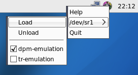

cdemu-tray is simple cdemu client written in c using dbus-glib and gtk+

Version 0.2 was released 26th July 2009: cdemu-tray-0.2.tar.bz2
Changelog is available here
Direct all your patches, comments, etc. to desowin@gmail.com
To get latest version, install mercurial and issue following
command:
hg clone http://hg.atheme.org/users/desowin/cdemu-tray cdemu-tray